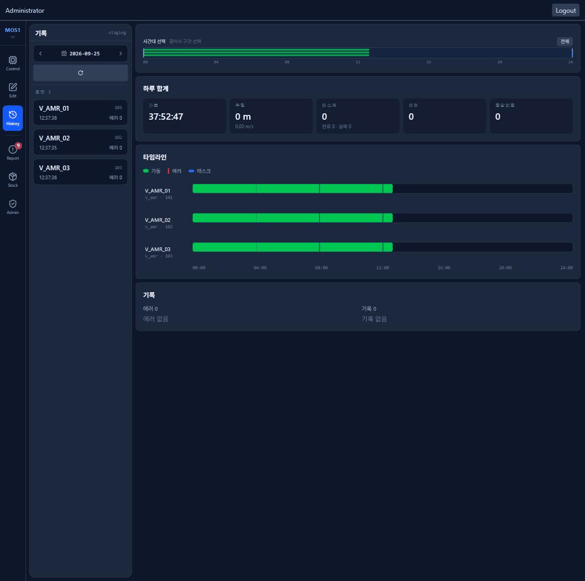

현장 로봇 18대의 상태를 실시간으로 받고, 이동·정지·루틴 명령을 내리는 웹 관제입니다. 현장에서 운영 중입니다.
MQTT 로 상태를 받아 지도 위에 로봇 위치·배터리·작업을 띄웁니다.
이동·정지·루틴 명령과 ACK 추적 · 재전송 · 「미배달」 경고.
3단계 권한 + 제어권 lease — 한 로봇을 한 사람만 조종합니다.
로봇별 일일 가동 타임라인과 하루 합계.
로봇 호출 워치 앱(Wear OS) · 오프라인 설치본.
로봇 카메라를 WebRTC(WHEP)로 봅니다.

관제 메인(현장 평면도)은 보안상 싣지 않았습니다.
경로 레이어를 끄면 11.4초, 맵 에디터 마커 클릭마다 13초 멈춤.
그리는 비용은 0.4초. 조작마다 선 968개를 하나씩 떼는 루프가 8~11초를 먹었다.
레이어는 한 번만 만들고 보이기/숨기기만 바꾼다. 에디터는 바뀐 부분만, 대량 생성은 12ms 프레임 예산으로 나눴다.
13.4초 → 50ms 미만마커 클릭 — 50ms 넘는 멈춤이 사라졌다
13.7초 → 62ms드래그
14.2초 → 3.7초로딩 중 멈춤
취소해도 대기열이 안 풀려 「이동 중」이 남고, 멀쩡한 로봇에 「미배달」 경고.
ACK 대기 칸이 로봇당 하나 — 늦게 온 이동 ACK 가 취소의 추적을 지웠다. 로봇은 최대 10초 뒤 ACK, 재시도 창은 7초.
추적을 로봇 × 명령별로 나누고, 취소·정지가 나가면 이전 명령 재발행을 끊는다. 무응답은 큐를 지우지 않고 「미배달」로 사람에게 넘긴다. 이동만 재시도 창 15.5초.
회귀 테스트 4 → 25건. 끊김·거부가 조용히 사라지지 않고 경고로 드러난다.
긴 이동 중 제어권이 자동 만료되고, 탭을 닫으면 락이 남았다.
클라이언트 타이머 4개가 제각각 만료를 판정했다.
만료 판정을 서버의 순수 함수 하나로(연결 30초 · 활동 180초). 3초 폴링이 생존 신호를 겸하고, 로봇이 움직이는 동안은 활동으로 친다.
타이머 4 → 1제어권 lease 모델
오래된 락 지적 2건이 구조적으로 사라졌고, 강제 회수·계정별 권한을 이 위에 올렸다.
빌드 실패·백엔드 미기동에도 배포 로그엔 성공.
가짜 신호 셋 — 파이프 끝 로그 함수의 종료 코드(항상 0), 백엔드가 죽어도 200 인 정적 페이지, 서버마다 다른 컨테이너 이름 규칙.
빌드는 compose 실제 종료 코드로, 배포는 nginx 를 거친 헬스 체크(최대 60초 폴링)로, 컨테이너는 라벨로 판정.
빌드 실패와 영구 502 가 FAILED 로 잡힌다. 「진짜 신호로 판정한다」가 프로젝트 규약이 됐다.
40건 중 6건 반증AI 멀티에이전트 코드 감사
보안·동시성·정확성 등 8개 축 병렬 탐지 → 발견마다 독립 에이전트가 반증 → 어느 축도 안 본 곳을 훑는다.
확정 25건. 스테이징이 실로봇과 같은 브로커를 쓰던 치명적 문제를 찾았다.
HLS 17초 지연로봇 카메라 영상 → WebRTC 로 전환
RTMP 직접 수신 약 2초, 웹 HLS 약 17초 — 세그먼트 버퍼가 지연을 쌓았다.
HLS 를 빼고 WebRTC(WHEP)로 전환.